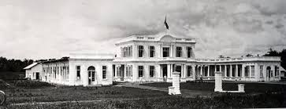
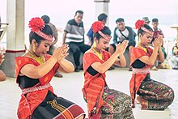
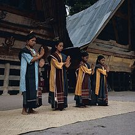

Sejarah

Pada zaman pemerintahan Belanda, Sumatra Utara merupakan suatu pemerintahan yang bernama Gouvernement van Sumatra dengan wilayah meliputi seluruh pulau Sumatra, dipimpin oleh seorang Gubernur yang berkedudukan di kota Medan. Setelah kemerdekaan,
dalam sidang pertama Komite Nasional Daerah (KND), Provinsi Sumatra kemudian dibagi menjadi tiga sub provinsi yaitu: Sumatra Utara, Sumatra Tengah, dan Sumatra Selatan. Provinsi Sumatra Utara sendiri merupakan penggabungan dari tiga
daerah administratif yang disebut keresidenan yaitu: Keresidenan Aceh, Keresidenan Sumatra Timur, dan Keresidenan Tapanuli.
Dengan diterbitkannya Undang-Undang Republik Indonesia (R.I.) No. 10 Tahun 1948 pada tanggal 15 April 1948, ditetapkan bahwa Sumatra dibagi menjadi tiga provinsi yang masing-masing berhak mengatur dan mengurus rumah tangganya sendiri yaitu:
Provinsi Sumatra Utara, Provinsi Sumatra Tengah, dan Provinsi Sumatra Selatan. Tanggal 15 April 1948 selanjutnya ditetapkan sebagai hari jadi Provinsi Sumatra Utara.
Geografis

Provinsi Sumatra Utara terletak pada 1° - 4° Lintang Utara dan 98° - 100° Bujur Timur, Luas daratan Provinsi Sumatra Utara 72.981,23 km². Sumatra Utara pada dasarnya dapat dibagi atas: Pesisir Timur, Pegunungan Bukit Barisan, Pesisir Barat,
Kepulauan Nias.
Pulau-pulau terluar adalah pulau Simuk (kepulauan Nias), dan pulau Berhala di selat Sumatra (Malaka). Kepulauan Nias terdiri dari pulau Nias sebagai pulau utama dan pulau-pulau kecil lain di sekitarnya. Kepulauan Nias terletak di lepas
pantai pesisir barat di Samudera Hindia. Pusat pemerintahan terletak di Gunung Sitoli. Kepulauan Batu terdiri dari 51 pulau dengan 4 pulau besar: Sibuasi, Pini, Tanahbala, Tanahmasa. Pusat pemerintahan di Pulautelo di pulau Sibuasi.
Kepulauan Batu terletak di tenggara kepulauan Nias. Pulau-pulau lain di Sumatra Utara: Imanna, Pasu, Bawa, Hamutaia, Batumakalele, Lego, Masa, Bau, Simaleh, Makole, Jake, dan Sigata, Wunga. Di Sumatra Utara saat ini terdapat dua
taman nasional, yakni Taman Nasional Gunung Leuser dan Taman Nasional Batang Gadis.
Seni dan Budaya
Arsitektur

Dalam bidang seni rupa yang menonjol adalah arsitektur rumah adat yang merupakan perpaduan dari hasil seni pahat dan seni ukir serta hasil seni kerajinan. Arsitektur rumah adat terdapat dalam berbagai bentuk ornamen.Pada umumnya bentuk
bangunan rumah adat pada kelompok adat batak melambangkan "kerbau berdiri tegak". Hal ini lebih jelas lagi dengan menghias pucuk atap dengan kepala kerbau.
Rumah adat Karo kelihatan besar dan lebih tinggi dibandingkan dengan rumah adat lainnya. Atapnya terbuat dari ijuk dan biasanya ditambah dengan atap-atap yang lebih kecil berbentuk segitiga yang disebut "ayo-ayo rumah" dan "tersek".
Dengan atap menjulang berlapis-lapis itu rumah Karo memiliki bentuk khas dibanding dengan rumah tradisional lainnya yang hanya memiliki satu lapis atap di Sumatra Utara. Bentuk rumah adat di daerah Simalungun cukup memikat. Kompleks
rumah adat di desa Pematang Purba terdiri dari beberapa bangunan yaitu rumah bolon, balai bolon, jemur, pantangan balai butuh, dan lesung. Bangunan khas Mandailing yang menonjol disebut "Bagas Gadang" (rumah Namora Natoras) dan
"Sopo Godang" (balai musyawarah adat). Rumah adat Melayu di Sumatra Utara tidak jauh berbeda dengan rumah melayu di provinsi lain, hanya warna hijau lebih dominan. Rumah adat di pesisir barat kelihatan lebih megah dan lebih indah
dibandingkan dengan rumah adat lainnya. Rumah adat ini masih berdiri kukuh di halaman Gedung Nasional Sibolga.
Tarian

Perbendaharaan seni tari tradisional meliputi berbagai jenis. Ada yang bersifat magis, berupa tarian sakral, dan ada yang bersifat hiburan saja yang berupa tari profan. Di samping tari adat yang merupakan bagian dari upacara adat,
tari sakral biasanya ditarikan oleh dayu-datu. Termasuk jenis tari ini adalah tari guru dan tari tungkat. Datu menarikannya sambil mengayunkan tongkat sakti yang disebut Tunggal Panaluan. Tari profan biasanya ialah tari pergaulan
muda-mudi yang ditarikan pada pesta gembira. Tortor ada yang ditarikan saat acara perkawinan. Biasanya ditarikan oleh para hadirin termasuk pengantin dan juga para muda-mudi. Tari muda-mudi ini, misalnya morah-morah, parakut, sipajok,
patam-patam sering dan kebangkiung. Tari magis misalnya tari tortor nasiaran, tortor tunggal panaluan. Tarian magis ini biasanya dilakukan dengan penuh kekhusukan. Selain tarian Batak terdapat pula tarian Melayu sperti Serampang
XII. dan tarian Sikambang dari Pesisir Barus, tarian Sikambang ini biasanya ditampilkan saat perayaan menikah dan khitanan
Kerajinan

Selain arsitektur, tenunan merupakan seni kerajinan yang menarik dari suku Batak. Contoh tenunan ini adalah kain ulos dan kain songket. Ulos merupakan kain adat Batak yang digunakan dalam upacara-upacara perkawinan, kematian, mendirikan
rumah, kesenian,dsb. Bahan kain ulos terbuat dari benang kapas atau rami. Warna ulos biasanya adalah hitam, putih, dan merah yang mempunyai makna tertentu. Sedangkan warna lain merupakan lambang dari variasi kehidupan. Pada suku
Pakpak ada tenunan yang dikenal dengan nama oles. Bisanya warna dasar oles adalah hitam kecokelatan atau putih. Pada suku Karo ada tenunan yang dikenal dengan nama uis. Bisanya warna dasar uis adalah biru tua dan kemerahan. Pada
masyarakat pesisir barat ada tenunan yang dikenal dengan nama Songket Barus. Biasanya warna dasar kerajinan ini adalah Merah Tua atau Kuning Emas.